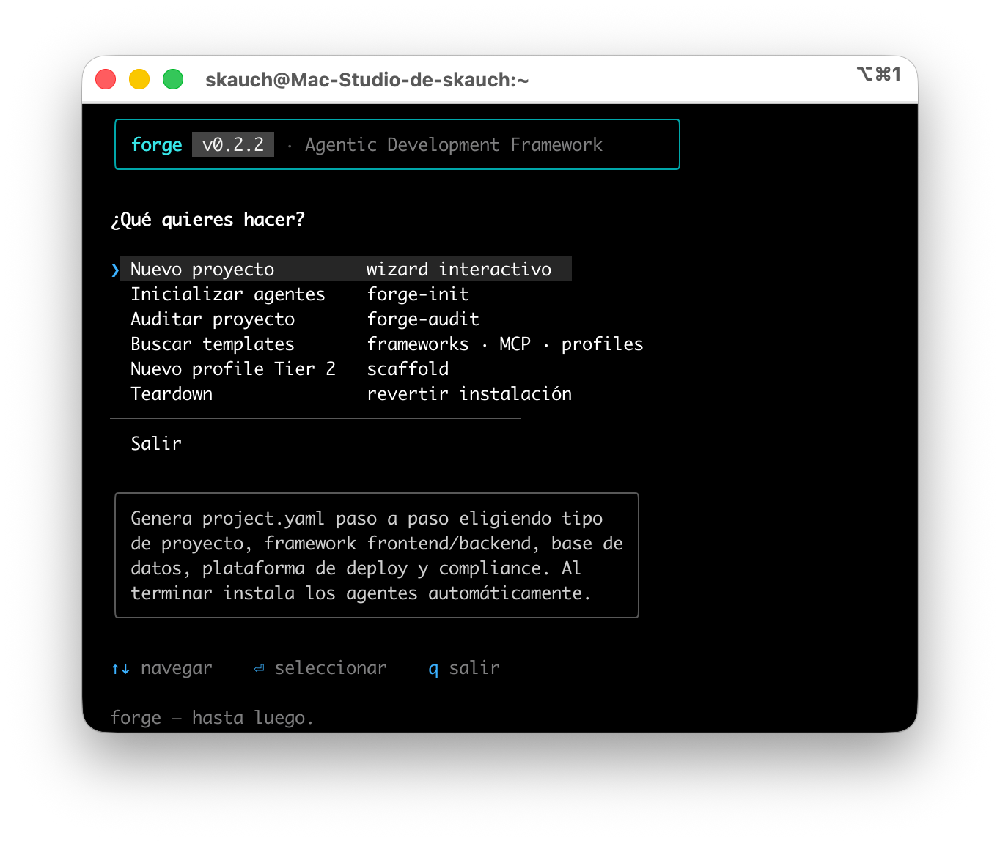

Multi-runtime real
Un project.yaml genera la config de 19 runtimes (4 nativos + 15 basados en reglas) mediante adaptadores de distribución.
Un equipo de agentes, cualquier runtime. forge detecta tu stack, instala agentes especializados, hooks de guardrail y un manifest auditable — para 19 runtimes (Claude Code, Cursor, Copilot, Gemini y 15 más) desde un solo project.yaml.
npx @cristiancorreau/forge init
$ npx @cristiancorreau/forge init ███████╗ ██████╗ ██████╗ ██████╗ ███████╗ ██╔════╝██╔═══██╗██╔══██╗██╔════╝ ██╔════╝ █████╗ ██║ ██║██████╔╝██║ ███╗█████╗ ██╔══╝ ██║ ██║██╔══██╗██║ ██║██╔══╝ ██║ ╚██████╔╝██║ ██║╚██████╔╝███████╗ ╚═╝ ╚═════╝ ╚═╝ ╚═╝ ╚═════╝ ╚══════╝ ✔ Stack detectado TypeScript · Node 20 ✔ Runtime Claude Code ? Selecciona agentes para tu equipo ◉ orchestrator tier 1 ◉ backend-engineer tier 1 ◉ compliance-reviewer veto ◯ security-auditor ✔ Agentes instalados .claude/agents/ ✔ Hooks de guardrail JS · sin Python ✔ Manifest SHA-256 .forge/manifest.json ▲ forge listo. Ejecuta /spec para tu primera feature.
Por qué forge
forge no es un archivo de reglas: es una capa de arquitectura, compliance y delegación que se regenera desde una sola fuente de verdad.
Un project.yaml genera la config de 19 runtimes (4 nativos + 15 basados en reglas) mediante adaptadores de distribución.
Ninguna tarea de código sin una spec aprobada. El orchestrator veta implementaciones sin spec en docs/specs/.
El compliance-reviewer tiene poder de veto vinculante sobre GDPR, LGPD y CCPA antes de que el código avance.
Cero Python. Hooks puros en JavaScript: branch-guard y detección de debug, secrets y operaciones de producción.
Manifest con SHA-256 y modo --dry-run: update re-sincroniza el catálogo preservando tus ediciones locales.
Wiki del proyecto: ingest, lint y query con citas. 15 skills invocables y 17 comandos en la CLI.
forge adopt instala forge en un proyecto existente; forge analyze lo lee (stack, hotspots, TODOs) y el skill /onboard genera arquitectura, onboarding y revisión de seguridad con agentes especializados.
Arquitectura
Cada capa tiene una responsabilidad clara, de la memoria del proyecto a la distribución por runtime.
El project.yaml es la única fuente de verdad: stack, equipo, agentes, skills y compliance. Todo se regenera desde acá.
7 agentes Tier 1 universales, 19 perfiles de stack Tier 2 y agentes Tier 3 de proyecto. El conocimiento que el equipo necesita por dominio.
Hooks que imponen cumplimiento y seguridad: branch-guard, detección de secrets, debug y operaciones de producción. Pura prevención.
El orchestrator coordina y despacha skills al agente correcto. La delegación es explícita y auditable, no implícita.
Adaptadores por runtime traducen la config a los 19 runtimes soportados. Escribes una vez, corre en cualquiera.
Panel interactivo
El comando forge panel abre un panel OpenTUI a pantalla completa con Bun — config, monitor, skills, hooks y templates. Con Node hace fallback a prompts de @clack; consolas legacy caen a ASCII.

Distribution
Defines el equipo una vez en project.yaml y los adaptadores escriben la config nativa de cada herramienta.
4 nativos · 15 basados en reglas
Quickstart
Un proyecto nuevo o uno que ya existe: forge se adapta a ambos. Requiere Node.js 20+ (con Bun se desbloquea el panel a pantalla completa).
Pruébalo sin instalar con npx @cristiancorreau/forge init, o instala la CLI global con tu gestor preferido — npm, pnpm o bun:
npm i -g @cristiancorreau/forge
pnpm add -g @cristiancorreau/forge
bun add -g @cristiancorreau/forge
El wizard full-screen (OpenTUI) corre con Bun; con npm/node funciona igual vía prompts.
init arranca el wizard en un proyecto nuevo; adopt incorpora forge a un codebase existente, lo analiza y genera la wiki.
Ejecuta /spec para tu primera feature. Sin spec aprobada, el orchestrator veta la implementación.
update re-sincroniza los archivos gestionados con el catálogo preservando tus ediciones; doctor y validate verifican el estado.
# proyecto nuevo $ npx @cristiancorreau/forge init # proyecto existente $ npx @cristiancorreau/forge adopt $ npx @cristiancorreau/forge analyze # leer el código; /onboard documenta # primera feature, spec-first $ /spec ▲ forge — listo para construir.
Empieza ahora
Open source bajo Apache-2.0. Configura cualquier proyecto para trabajar con agentes de IA en un comando — sin lock-in de runtime.


★ ¡¡¡ BIENVENIDO A MI HOMEPAGE !!! ★
El framework de IA más cool de la WWW
💻 ¿Qué es Forge AI?
project.yaml hacia 19 runtimes (Claude Code, Cursor, Copilot, Gemini y 15 más).
¡Un equipo de agentes, todos los editores! 🚀
☞ Pruébalo AHORA mismo: ☜
♫ ¡el baby aprueba tu setup! ♫
💻 Ver en GitHub 📦 Bajar de npm ✍ Firmar guestbook
Sos el visitante número:
0001337
Escríbele al webmaster · 🐙 hecho con Notepad en una Mac
[ « Anterior | Aleatorio | Siguiente » ]
Miembro del Agentic Dev WebRing 🌧
🖥 Best viewed in Netscape Navigator 4.0 @ 800×600 🖥
© 1999–2026 Forge AI · Apache-2.0 · hosted on GeoForge™